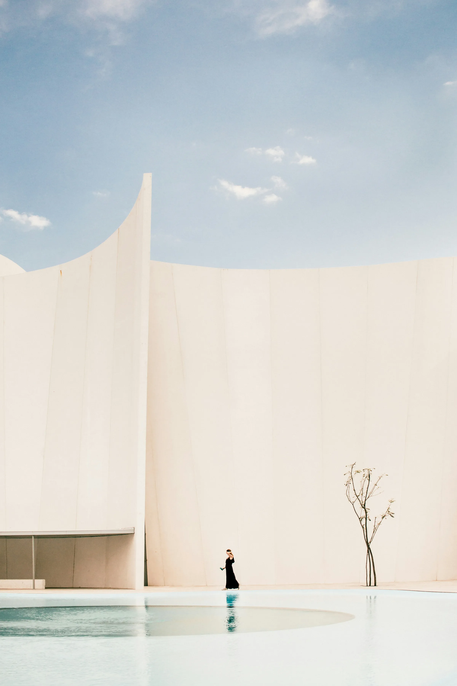

Whiticker
Architecture — Lifestyle & People — Travel / Hotels
Based on the Gold Coast, working throughout Australia and internationally.
01 Behind the Lens
Photography is mostly waiting. For the light to come round, for the room to settle, for the moment a building stops performing and simply is. The pictures that last are rarely the ones taken first.
Work spans architecture, interiors, hospitality and the people who occupy them — commissioned by architects, developers, hotel groups and the studios that build for them.
02 Architecture

Light held against a curve
One Sydney Harbour
- Client
- Harbour House Developments
- Architect
- Studio Farrow
- Developer
- Meridian Property Group
The smallest figure in the frame
One Sydney Harbour
- Client
- Harbour House Developments
- Architect
- Studio Farrow
- Developer
- Meridian Property Group
03 Lifestyle & People

Kept for the road that deserves it
Private Collection
- Client
- Marque Automotive
- Agency
- Field & Co
- Location
- Gold Coast, QLD
Parked where the afternoon lands
Hillside Residence
- Client
- Aster Developments
- Architect
- Studio Farrow
- Location
- Byron Bay, NSW
04 Travel / Hotels
The long way round, taken slowly
Alpine Traverse
- Client
- Northbound Travel
- Agency
- Field & Co
- Location
- Victorian Alps
Stone that got there first
Hinterland Lodge
- Client
- Hinterland Group
- Architect
- Marlow Architects
- Location
- Gold Coast, QLD
Ridge after ridge, going quiet
Highland Crossing
- Client
- Southern Wilds
- Agency
- Meridian Creative
- Location
- Central Highlands, TAS
Somewhere the season turns first
The Escarpment
- Client
- Escarpment Lodges
- Architect
- Marlow Architects
- Location
- New England, NSW
05 Contact
- Telephone
- +61 400 000 000
- @whiticker
- @whiticker
© 2026 Whiticker — Based on the Gold Coast, working throughout Australia and internationally.